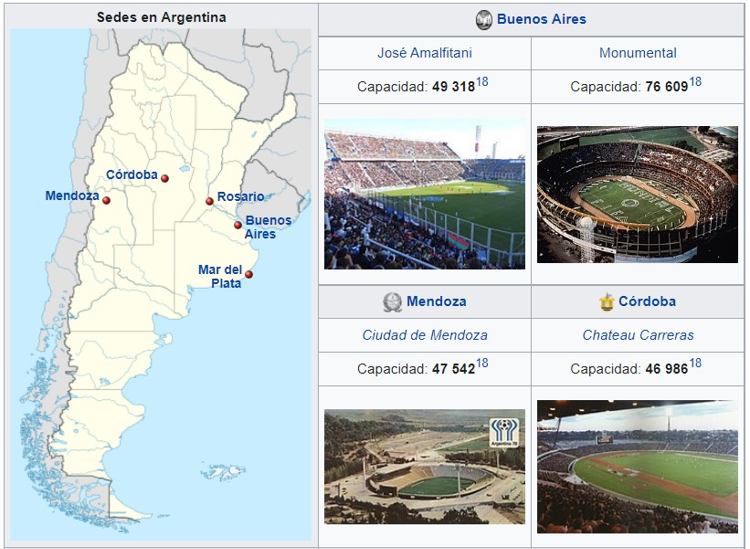

La Copa Mundial de la FIFA Argentina 1978 fue la undécima edición de la Copa Mundial de Fútbol y se desarrolló en Argentina, entre el 1 de junio y el 25 de junio de 1978. La Copa del Mundo volvía así a Sudamérica por primera vez desde Chile en 1962. El torneo fue disputado en seis estadios, repartidos en las ciudades de Buenos Aires, Rosario, Mar del Plata, Córdoba y Mendoza. La mascota de este mundial fue Gauchito Mundialito y la pelota oficial sufrió un cambio revolucionario con la aparición de la Adidas Tango. Esta pelota se convirtió en un clásico del diseño que iba a perdurar durante cinco mundiales, y contaba con mayor impermeabilización que los diseños anteriores. En el torneo no jugaron el joven Diego Armando Maradona, en ese momento con 17 años, ni la consagrada estrella neerlandesa Johan Cruyff, pero sí lo hicieron otros consagrados futbolistas internacionales de la época como Johan Neeskens, Teófilo Cubillas, Zico, Dino Zoff y Mario Kempes, además de Michel Platini, Karl-Heinz Rummenigge y Paolo Rossi, entre otros valores destacados.
Se jugó con el mismo sistema de eliminación que en Alemania Federal 1974: una primera ronda con cuatro grupos clasificatorios, donde los dos primeros de cada uno clasificaron a la segunda fase, en la que se definieron los dos finalistas. La gran final se jugó entre los Países Bajos, ganadores del Grupo A, y Argentina, que clasificó ganando el Grupo B. Fue un partido muy disputado en que los equipos debieron ir a tiempo suplementario, ya que en los 90 minutos habían empatado 1:1. Finalmente, con goles de Mario Kempes (2) y Daniel Bertoni (1) la selección albiceleste se impuso por 3:1, levantando la copa por primera vez, luego de que se le hubiera escapado 48 años antes en Uruguay 1930 , al perder por 4:2 en la final, ante el combinado local. El torneo se disputó mientras que en la Argentina gobernaba una dictadura que había impuesto un régimen terrorista de Estado, boicoteado por algunas organizaciones internacionales de derechos humanos. La decisión de realizar el torneo en Argentina, las relaciones entre la dictadura militar con la FIFA, algunos resultados deportivos sospechosos y los actos de corrupción, han sido materia de investigación y debate. Que han catalogado la realización de esta copa mundial como una de las más controversiales.
En 1972 se preseleccionaron ocho subsedes, siendo las seis que fueron en 1978 más La Plata y Tucumán. El gobierno de La Plata prometió un "Estadio Único" pero para 1974 fue desechado por pujas internas. El Estadio Ciudad de La Plata se terminaría construyendo décadas después, sería inaugurado parcialmente recién en 2003. En el caso de Tucumán, se había prometido un ambicioso estadio de 70 000 espectadores en Horco Molle, de formas similares al actual estadio del Racing Club de Avellaneda, con el techo incluido. En 1974 la subsede Tucumán fue "congelada" y en 1975 se la dio de baja, dada la intensidad de las acciones de la guerrilla y las Fuerzas Armadas en la provincia. Finalmente, las ciudades elegidas para albergar los partidos del Mundial fueron: Buenos Aires, Rosario, Córdoba, Mar del Plata y Mendoza. Para esto se invirtió en mejorar la infraestructura de los estadios existentes y la construcción de tres nuevos estadios acordes a las exigencias de la FIFA. Fueron remodelados el Monumental y el José Amalfitani en Buenos Aires, y el Gigante de Arroyito en Rosario.17 Se construyeron los estadios Chateau Carreras (posteriormente rebautizado Mario Alberto Kempes), Ciudad de Mendoza y José María Minella.17 La Selección Argentina tuvo su centro exclusivo de entrenamiento y concentración en un predio de José C.Paz
